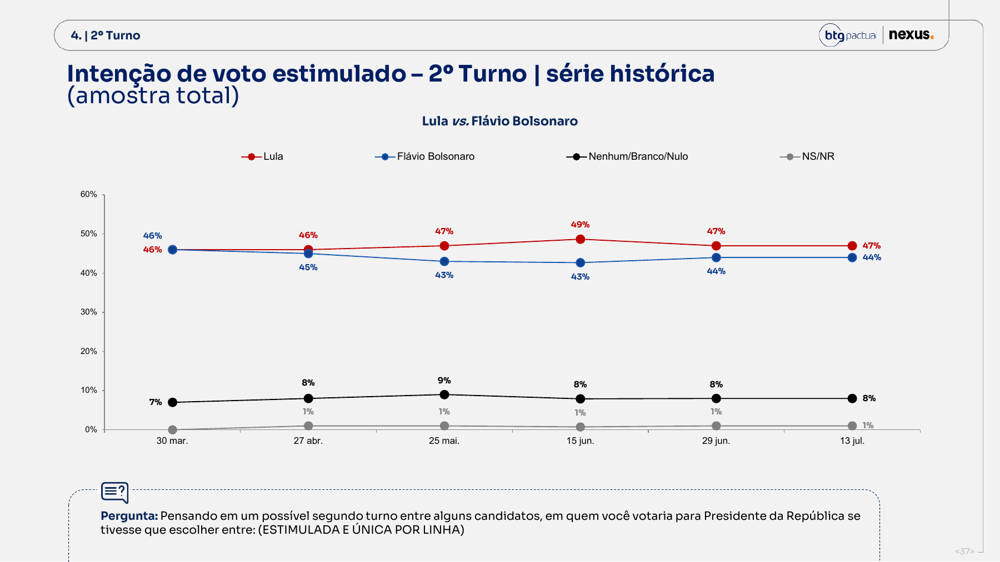
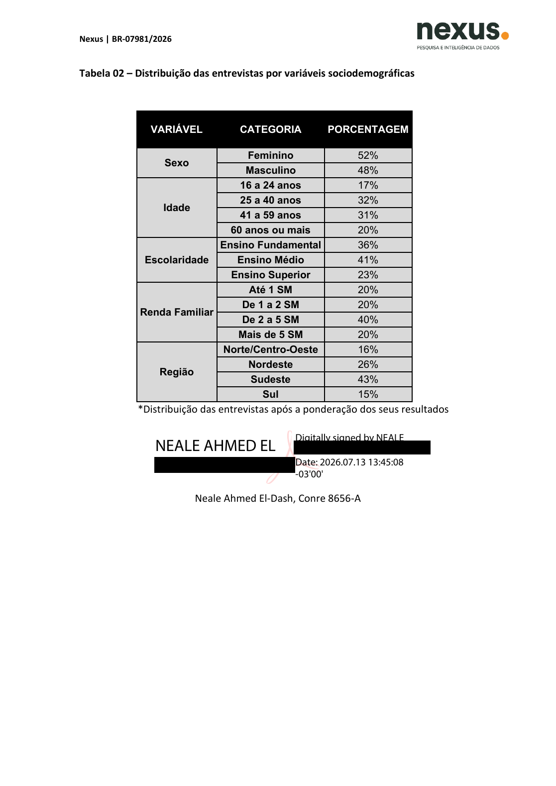
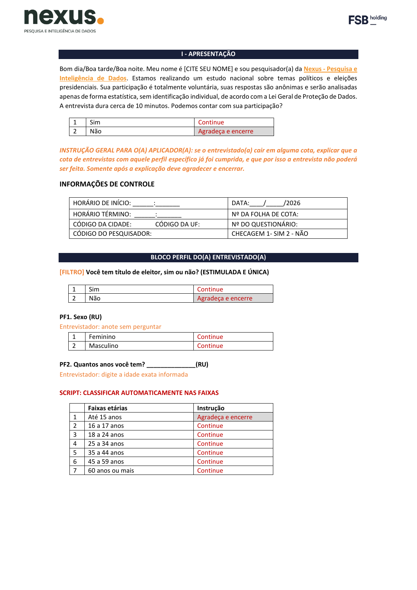
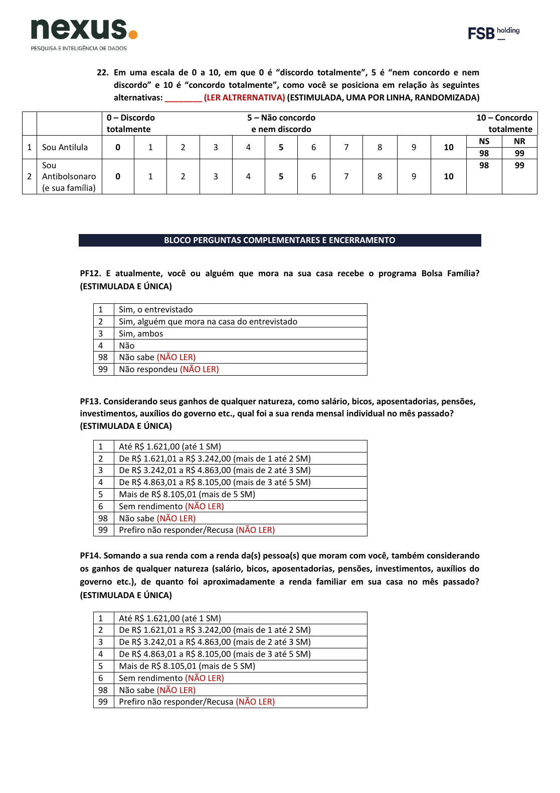
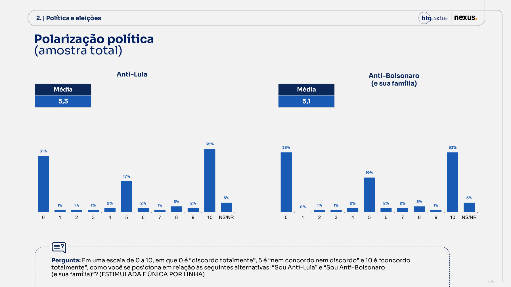
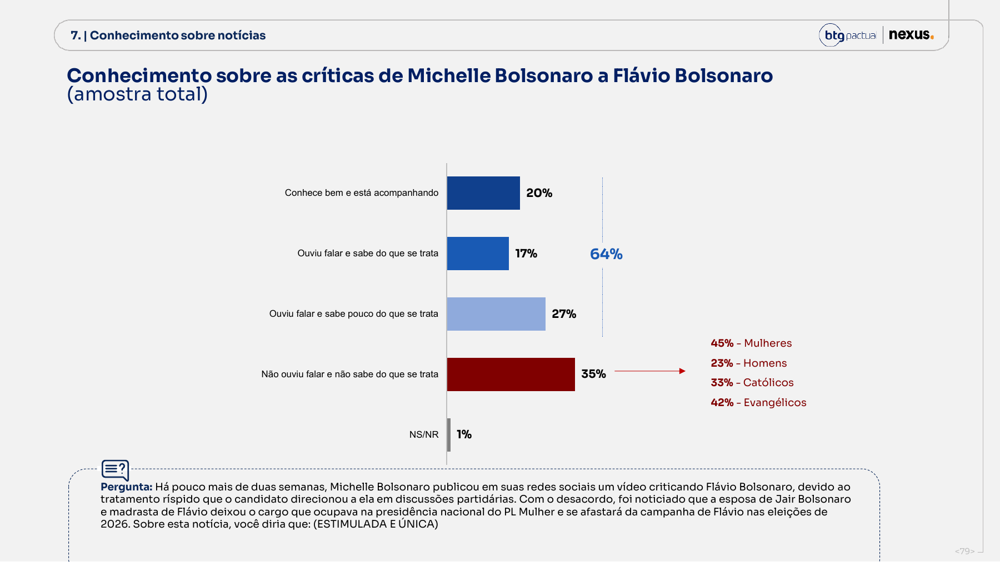
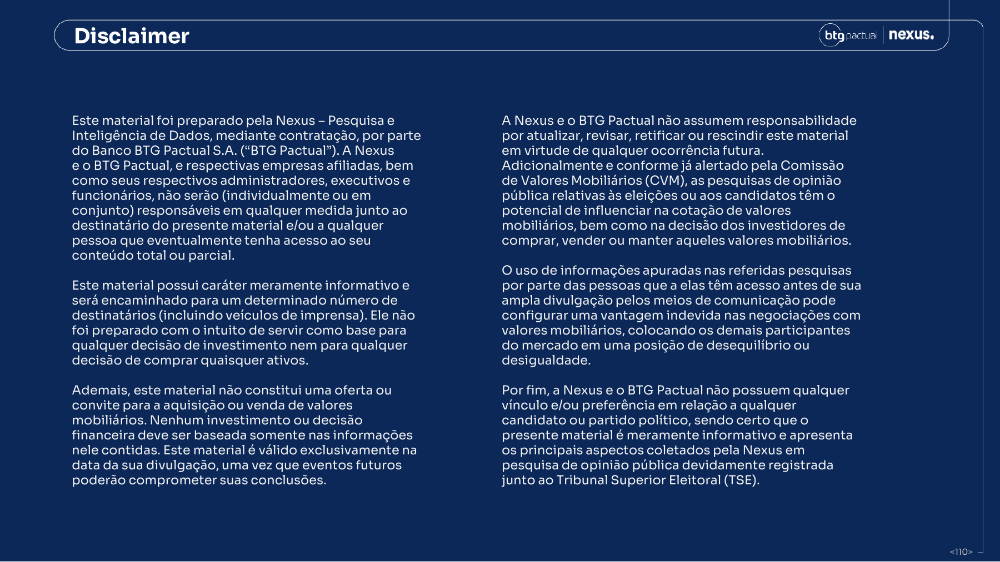

47×44
Flávio não está inviável
A diferença de 3 pontos inclui zero até no cenário mais otimista de amostra aleatória simples. A própria Nexus diz “empate técnico”.
A BTG/Nexus põe Lula em 47% e Flávio Bolsonaro em 44%. Empate técnico, palavra do próprio instituto. O placar é plausível, e não é aí que mora o problema. O problema é o que não se pode ver: a planilha de pesos que estica e encolhe cada entrevista, o efeito de desenho que ninguém publicou, um arquivo chamado “Bairros” que não tem um único bairro, uma escala que mede “Lula” de um lado e “Bolsonaro e sua família” do outro, e ao menos doze respostas que foram coletadas do eleitor e nunca voltaram ao público. Uma pesquisa que a gente não consegue refazer não é ciência. É palavra de honra com gráfico.
Um auditor sério não inventa manipulação onde os arquivos não deixam demonstrá-la. E também não engole “confie na gente” como se fosse método. Esta rodada pode estar perto da realidade. A documentação publicada, essa, não permite a ninguém de fora reconstruir os pesos, o efeito de desenho, os clusters nem a probabilidade final de uma pessoa ser sorteada e ouvida. O que se pede não é fé. É o arquivo.
A diferença de 3 pontos inclui zero até no cenário mais otimista de amostra aleatória simples. A própria Nexus diz “empate técnico”.
Não há microdados, pesos finais, distribuição bruta, deff, n efetivo, taxa de resposta, bases não ponderadas por recorte nem algoritmo replicável dos clusters.
Sortear números dá chance conhecida ao telefone. Não dá chance igual a cada eleitor quando a cota fecha portas, o domicílio tem vários aparelhos, a não resposta some e a escolha de quem atende não é aberta.
Nenhum arquivo demonstra que respostas foram inventadas ou que o placar foi encomendado. O laudo aponta risco de viés, conflito de papel e impossibilidade de auditoria, coisas sérias por si só.
A narrativa de inviabilidade de Flávio falha nos próprios números da Nexus; já a narrativa de rigor científico falha porque o instituto não publica o necessário para que terceiros verifiquem o que fez.
Este laudo complementa, sem apagar, a auditoria da rodada de 15/06/2026. “Fato” significa observação documental ou cálculo reproduzível; “inferência” é a explicação mais compatível com os fatos; “hipótese” exige evidência adicional.
Auditoria não é militância. Antes de apontar o que falta, rodamos os testes que poderiam flagrar fraude aritmética no dado bruto. Todos passaram. É isso que separa uma crítica de método de uma teoria da conspiração.
Sete passos do telefone que toca à manchete que sai. Em cada um, uma porta onde a luz deixa de entrar.
Um computador gera sequências de telefone ao acaso, fixo e celular, dentro dos códigos de área do país. Em tese, cada número tem chance conhecida de ser chamado.
Ninguém publica quantos números foram gerados, quantos eram válidos, quantos chegaram a tocar. O ponto de partida já nasce invisível.
O aplicador liga. A maioria não atende, desliga no primeiro “boa noite” ou é número que não existe mais.
Contatos, recusas, abandonos e a taxa de resposta pelo padrão AAPOR nunca aparecem. O funil que transforma dezenas de milhares de chamadas em 2.003 entrevistas fica no escuro.
Quem atende ouve a primeira pergunta: “Você tem título de eleitor?” Se não tem, agradece e encerra.
Num domicílio com vários moradores e vários aparelhos, quem, exatamente, vira “o eleitor” daquela casa? A regra que escolhe o respondente dentro do telefone não é aberta.
O sistema confere o perfil de quem atendeu, sexo, idade, região. Se a cota daquele perfil já encheu, a instrução impressa é seca: explique que a vaga fechou, agradeça e encerre.
Um eleitor legítimo, sorteado, é dispensado porque “o tipo dele já bateu a meta”. A partir daqui, a probabilidade final não é mais a do número; é a do fluxo de campo daquele dia, que não se documenta.
Cerca de dez minutos ao telefone. O sexo, o entrevistador anota sem perguntar, pela voz. Passam voto, rejeição, escalas de 0 a 10, Bolsa Família, renda, cor.
Nem toda resposta coletada reaparece no relatório. Doze itens entram; sete blocos não saem. A renda individual e a cor/raça somem por inteiro.
Encerrada a coleta, uma matriz invisível estica umas entrevistas e encolhe outras, até a amostra “parecer” o Brasil da régua oficial.
As metas exatas, as distribuições brutas, o algoritmo, o corte dos pesos extremos, o efeito de desenho, nada disso vem a público. O peso final de cada respondente é segredo comercial.
Cento e onze páginas se condensam num número. O número vira manchete.
A manchete diz “47 a 44, vantagem de Lula”. Não diz que a margem da diferença é ±4,18, que o zero cabe dentro do intervalo, que a série sobe e desce sem rumo fixo. A última porta é a do leitor, que recebe a certeza e nunca recebe a dúvida.
No segundo turno, Lula contra Flávio foi 46 a 46, 46 a 45, 47 a 43, 49 a 43, 47 a 44 e de novo 47 a 44. A vantagem chegou a seis pontos em 15 de junho e recuou para três. Isso sobe e desce; não é uma seta apontando sempre para o mesmo lado. No primeiro turno, a distância caiu do pico de nove para seis pontos. Quem lê “Lula abre vantagem” está lendo uma fotografia tremida como se fosse filme.

Prova 01 · p. 37Comparações exigem cautela: cartões e candidaturas testadas mudaram ao longo da série, problema detalhado no laudo anterior.
Em julho, Lula caiu de 38% para 35%, Flávio de 27% para 24% e NS/NR subiu de 20% para 22%. A rodada enfraqueceu os dois nomes na lembrança espontânea.
Guarde o gesto: uma linha que sobe e desce dentro do erro amostral não é uma tendência, é ruído bem desenhado. O resto do laudo mostra por que até esse ruído é impossível de conferir por fora.
Contra Lula, Flávio marca 44%; Zema, 40%; Caiado, 38%; Renan Santos, 35%. Isso é o oposto de inviabilidade comparativa.
Flávio lidera entre homens (51%), evangélicos (55%), Sul (58%), N/CO (50%) e renda de 2 a 5 SM (49%). Lula domina mulheres, Nordeste, fundamental e renda até 1 SM.
A página de 29/06 diz que a rodada anterior foi 48–43 e a diferença caiu de 5 para 3. O relatório de 15/06 e a série atual dizem 49–43: a queda correta foi de 6 para 3. Veja o texto errado e a rodada anterior.
O único candidato do campo bolsonarista testado no 1º turno, no 2º turno e na bateria de doze “capacidades” (Q15) é Flávio. A pesquisa estrutura toda a disputa como “Lula vs Flávio”, sem Tarcísio, Michelle ou Eduardo. É escolha de desenho, não erro, mas molda a narrativa antes de qualquer resposta. Fato
O “±2 pontos” que aparece no release serve, mais ou menos, para uma porcentagem sozinha. Só que a pergunta que interessa não é essa. A pergunta é sobre a diferença entre dois candidatos, e diferença tem margem própria, sempre maior. Com n=2.003 e amostragem aleatória simples, a margem de 95% dessa diferença é ±4,18 pontos. Traduzindo: uma vantagem de três pontos tem o zero dentro do intervalo. Empate de verdade, não empate de figura de linguagem.
A faixa sombreada é a margem de 95% da diferença (±4,18 pp) em torno da vantagem observada. Onde a banda toca a linha do zero, o empate é estatístico, não retórico. Só em 15 de junho (gap de 6) a banda não encosta no zero.
Cenários de sensibilidade; não estimativas do deff real, que a Nexus não publicou.
| Cenário | Margem da diferença | IC 95% do gap | n efetivo |
|---|---|---|---|
| SRS, deff 1,0 | ±4,18 pp | −1,18 a +7,18 | 2.003 |
| deff 1,5 | ±5,11 pp | −2,11 a +8,11 | 1.335 |
| deff 2,0 | ±5,91 pp | −2,91 a +8,91 | 1.002 |
A margem SRS individual no pior caso é ±2,19 pp; “2” é arredondamento. Pesos podem ampliar a variância. Sem peso por respondente, deff de Kish e estrutura do desenho, ninguém externo calcula o valor real.
As tabelas por sexo, idade, religião, renda e região não trazem base não ponderada. Logo, não exibem margem própria nem permitem identificar células pequenas.
Duas pesquisas diferentes carregam, cada uma, o seu erro; somados, viram um erro maior ainda. Tratar variação de um a três pontos entre ondas como fato político é confundir maré com onda.
Cada ponto precisa de IC, base, deff e aviso de que a pesquisa é fotografia transitória. Sem isso, desenho de linha vira falsa precisão.
Abra os cinco anexos chamados “Bairros”. Você encontra município, código do IBGE e número de entrevistas. Bairro, nenhum. O questionário pergunta o estado e a cidade, nunca o bairro. A justificativa do próprio instituto admite que, em RDD, não há setor censitário, e a Resolução TSE 23.600/2019, no art. 2º, §7º-F, passou a aceitar unidade territorial compatível mediante justificativa. Ou seja: juridicamente, pode ser defensável. Chamar o arquivo de “Bairros” continua sendo, no material, enganoso. O rótulo promete uma granularidade que o dado não tem.
| Onda | Registro | n | Municípios | Cidades com n=1 | Top 10 do n |
|---|
| Transição | Comuns | Jaccard | Retidos | Entram/saem |
|---|
De 29/06 para 13/07, só 331 municípios se repetem; 400 entram e 417 saem. O Jaccard de 0,288 significa baixa sobreposição territorial.

Prova 02 · anexo “Bairros”O prazo que a regra permite
O registro no PesqEle avisa, com todas as letras, que “a relação completa dos municípios pesquisados será encaminhada a este tribunal até o sétimo dia seguinte à data de registro da pesquisa, conforme a Resolução 23.600/2019 do TSE, art. 2º, § 7º”. Faça o calendário desta rodada: registro em 07/07, divulgação em 13/07, prazo legal para dizer onde a pesquisa foi feita até 14/07. A lei brasileira admite que o número vire manchete um dia antes de o país saber em que cidades ele foi coletado. Nesta rodada a Nexus entregou o arquivo junto; o problema é que ela não era obrigada a isso. É essa brecha que as minutas ao fim deste laudo fecham.
O arquivo de municípios que a Nexus enviou ao TSE mostra que São Paulo respondeu por 533 das 2.003 entrevistas, contra 21,6% do eleitorado. Cem entrevistas a mais do que uma amostra proporcional teria. O problema não é o excesso em si, típico de sorteio por telefone, mas o fato de a ponderação corrigir apenas cinco macrorregiões, e nunca os 27 estados.
O registro TSE e o relatório dizem ponderar por região (5 macrorregiões), sexo, idade, escolaridade e telefonia, nunca por UF. Logo, as distorções intra-região não são corrigidas: o “bloco Sudeste”, 43% do total, fica dominado pelo eleitor paulista, e o peso de São Paulo dentro dele fica inflado sem qualquer correção. Mesmo depois de ponderar, o perfil publicado (p.109) traz Nordeste em 26%, abaixo da meta de projeto (27%) e do eleitorado (27,6%).
Fato Inferência Um teste de qui-quadrado de Pearson entre entrevistas por UF e eleitorado dá 214,3 com 26 graus de liberdade, muito acima do crítico (≈54 a 0,1%): a alocação geográfica bruta não é proporcional ao eleitorado.
Reproduz: agregação por UF do NexusBTG_Bairros_072026.pdf (2 primeiros dígitos do código IBGE) contra tse_eleitorado_perfil.sqlite, dimensão uf. Ver uf_distribution no JSON.
| Região | n | Amostra | Eleitorado | Meta | Δ el. |
|---|
“Meta” é o alvo de projeto registrado (Norte 8, CO 8, NE 27, SE 43, Sul 15). O Nordeste, região mais lulista, é a maior baixa: 24,31% de entrevistas brutas contra 27,58% do eleitorado.
Para uma eleição nacional existe uma régua oficial. O TSE diz quantos eleitores há por sexo, idade e território. A PNAD diz como o Brasil se reparte em renda, escolaridade e trabalho. Quem faz pesquisa deve encostar a amostra nessa régua e mostrar o alvo exato que usou. A Nexus não mostra os alvos, e nos pontos em que dá para conferir, a amostra fica longe da régua. Números bonitos, sim. Auditáveis, não.
TSE Eleitorado Atual, geração de 01/07/2026 (competência jun./2026): 157.846.602 eleitores residentes no Brasil, excluído o exterior. A meta Nexus reproduz a PNAD anual 2024, não o eleitorado: força o jovem para cima e o idoso para baixo.
Cada quadro tem 100 células. À esquerda, a PNAD (IBGE); à direita, a meta da Nexus. Sobra pobre (até 1 SM: 20 células contra 13) e falta rico (5+ SM: 20 contra 25).
Repare no truque de contabilidade. A meta registrada era 17% de jovens de 16 a 24 e 20% de idosos de 60+. No TSE de junho, são 12,52% e 23,27%: a amostra tem +4,48 pontos de jovens a mais e −3,27 pontos de idosos a menos. E, quando chega ao relatório final, as faixas mudam de figurino, 25–40 e 41–59 no lugar das antigas 25–34/35–44/45–59, justo o suficiente para ninguém conseguir cruzar meta com resultado.
Sexo fica próximo: 52% mulheres contra 52,82% no TSE. Região também é próxima, mas o registro prevê Nordeste 27% e o perfil final publica 26%, uma discrepância interna que pede distribuição bruta e ponderada.
Fato M1
O “perfil da amostra” (p.109) reproduz ao ponto percentual as metas que a Nexus registrou: escolaridade 36/41/23, sexo 52/48, 16–24 = 17%, 60+ = 20%. Só que essas metas vêm da população pesquisada pelo IBGE (PNADc 16+, 1ª visita 2024), não do eleitorado do TSE. A amostra tem a cara que a Nexus escolheu como meta, mais jovem e menos idosa que o eleitorado real, e as faixas etárias são reagrupadas de um jeito que impede conferir a promessa feita ao TSE.
Entre pessoas de 16+, a PNAD produz 13,50/21,94/39,23/25,33. A Nexus fica +6,50 pp em até 1 SM e −5,33 pp em 5+ SM, muito além do erro amostral da PNAD.
Pode haver diferença entre renda “familiar” declarada ao telefone e renda domiciliar PNAD, não resposta, imputação ou alvo próprio. Exatamente por isso o instituto deve publicar a regra.
PNAD Contínua anual, 1ª visita, 2024; 323.023 pessoas de 16+ (168,3 milhões ponderadas), peso V1032; renda efetiva domiciliar deflacionada para abr./2026 e dividida pelo SM de R$ 1.621; variância por 200 pesos replicados.
| Faixa | PNAD | IC 95% | Nexus | Δ |
|---|
A faixa de renda “2 a 5 salários mínimos” aparece congelada em exatos 40% nas cinco ondas. O questionário, porém, revela que essa faixa foi medida em duas partes, “2 a 3 SM” (R$ 3.242,01 a 4.863) e “3 a 5 SM” (R$ 4.863,01 a 8.105), que a Nexus coletou e somou antes de publicar. O dado que mais chama atenção por não variar é a fusão de duas medições que o instituto tem em mãos mas não mostra.
Fato Inferência
O questionário coleta renda familiar (PF14) em cinco faixas: até 1 SM; 1–2; 2–3; 3–5; 5+. O relatório publica em quatro: até 1; 1–2; 2–5; 5+. A banda “2–5 SM”, a única imóvel em exatamente 40% nas cinco ondas, é o agregado de 2–3 e 3–5 SM. Um 40% fixo no agregado pode esconder movimento compensatório entre as duas metades. Eles anotaram as duas divisórias, mas só mostram a gaveta fechada. Se 40% é alvo fixo, que se declare. Se é resultado, uma estabilidade tão perfeita, onda após onda, pede explicação.
Reproduz: 5 faixas em quest_layout.txt (PF13/PF14) contra o perfil de 4 faixas na p.109; série congelada em income_series no JSON.
No benchmark PNAD trimestral 16+ disponível no projeto, Fundamental/Médio/Superior são 33,23/41,58/25,19; a Nexus publica 36/41/23. A discrepância é menor que na idade e renda, mas confirma a necessidade de abrir definição, universo e alvo de cada categoria.
Pegamos os cruzamentos que a própria Nexus publicou — o 2º turno Lula × Flávio por sexo, idade, escolaridade, renda e região (p. 49–50) — e recalculamos o placar como se a amostra tivesse a cara exata do universo oficial: o eleitorado do TSE para sexo, idade e região, a população da PNAD/IBGE para renda e escolaridade. Cada grupo passa a falar com o volume do seu tamanho real. A pergunta é seca: se a régua fosse a oficial, o 47 × 44 mudaria?
Partimos das tabelas que a Nexus imprimiu: para cada faixa (idade, renda, região…), quanto cada candidato faz. Nada é inventado; são os números do relatório.
Trocamos o tamanho de cada grupo: sai a “meta” da Nexus, entra a régua oficial do TSE e da PNAD. O grupo dos idosos engorda, o dos jovens emagrece, até a amostra parecer o Brasil real.
Com os novos pesos, somamos as mesmas células e lemos o placar. É a mesma pesquisa, só que com cada voz no volume do seu tamanho oficial.
A faixa cinza é a margem de 95% da diferença (±4,18 pp) em torno do placar publicado: de −1,18 a +7,18. Cada haltere sai do +3,0 publicado e chega ao gap reponderado por aquela régua. Todos os sete cenários caem dentro da banda; renda (+1,4) é o que mais se aproxima do zero, mas não o cruza. Inferência
| Cenário | Régua oficial | Lula | Flávio | Gap | IC 95% do gap (técnica) |
|---|
O intervalo é a incerteza da técnica (arredondamento das células ao inteiro, propagado por Monte Carlo com 10.000 réplicas perturbando cada célula em ±0,5). Ele é estreito porque o deslocamento depende da diferença de pesos aplicada às mesmas células — o ruído quase se cancela. Reproduz: bloco reweight no JSON; função reweight_scenarios() em scripts/nexus-btg-audit.py.
Teste obrigatório antes de reponderar qualquer coisa: com os pesos da própria Nexus (perfil da p. 109), as células publicadas reconstroem o topline em todas as cinco margens, dentro de ±0,5 ponto. É o mesmo raciocínio do box N1 do Veredito: a ponderação da Nexus é um esquema único e coerente, sem números batidos à mão. Só por isso a reponderação faz sentido — estamos mexendo numa base íntegra.
| Margem | Lula reconstruído | Flávio reconstruído | dentro de ±0,5? |
|---|
As células já vêm ponderadas pela Nexus. Estamos reponderando um número que já foi ponderado, não os entrevistados. O correto é ler como “se a amostra tivesse a cara da régua oficial, o placar seria compatível com Lula ~46,8 × Flávio ~44,2” — não “o número verdadeiro”.
Cada percentual pode estar ±0,5 do valor real. Propagamos esse ruído (Monte Carlo, 10.000 réplicas). O efeito da reponderação é robusto ao arredondamento: os intervalos da técnica são estreitos.
A margem amostral do levantamento (±2 pp, e mais na diferença) engloba todos os cenários acima. Reponderar para a régua oficial não vira o placar — e nem poderia; tudo cabe dentro do erro original.
Reponderar com a régua oficial não vira o placar. Os dois maiores empurrões apontam para lados opostos — a renda puxa para Flávio, a idade puxa para Lula — e se cancelam. O 47 × 44 não é artefato de amostra torta: se fosse a régua do TSE e do IBGE, a Nexus teria publicado praticamente o mesmo número.
A mesma pesquisa rende quatro placares — de +1,4 a +4,0 conforme a régua que se escolhe. Quem escolhe a régua escolhe a manchete. E a Nexus não publica a régua: os alvos exatos de ponderação, que decidem qual desses placares vira notícia, ficam do lado de dentro da caixa-preta.
O anexo garante que cada número elegível tem probabilidade conhecida de ser sorteado. Verdade, no primeiro passo. Só que o próprio questionário manda o entrevistador encerrar a conversa assim que “a cota daquele perfil” estiver cheia. São duas coisas diferentes: sortear um telefone e escolher, no fim, qual eleitor conta. Entre uma e outra, há uma porta que se abre ou se fecha, e ninguém publica a regra dessa porta.

Prova 03 · p. 1Não há quantidade de números gerados, válidos, fixos/celulares, duplicados, chamados nem cobertura por DDD.
Não se sabe como múltiplos usuários, múltiplos aparelhos ou domicílios com mais linhas afetam a chance de cada eleitor.
Faltam contatos, elegíveis, recusas, abandonos, desconhecidos, taxa AAPOR e duração real média.
Um eleitor sorteado pode ser dispensado na porta porque o perfil dele “já encheu”. A partir daí, a chance de ele entrar na conta não é mais a do número sorteado; é a do fluxo de campo daquele dia, que não se publica.
PF1 manda o entrevistador marcar feminino/masculino sem perguntar; isso introduz classificação por voz e exclui autodeclaração.
O relatório (p.4) diz controlar por sexo, idade, escolaridade, telefonia e DDD. O registro no TSE controla por região, telefonia, sexo, idade e escolaridade. O relatório troca “região” por “DDD”; o registro não menciona DDD. A própria lista do que foi controlado não fecha entre as peças, de novo opacidade sobre o método. Fato
“Questionário completo no PesqEle” não resolve nada se o resultado de cada pergunta puder sumir do relatório. O eleitor respondeu; o público não vê. Cruzamento escolhido a dedo não substitui a frequência total. Abaixo, a reconciliação item a item dos blocos que foram perguntados e não voltaram como resultado.
| Itens coletados | O que foi perguntado | O que aparece | O que falta | Situação |
|---|---|---|---|---|
| PF4–PF9 · 6 itens | Trabalho remunerado, posição, vínculo, CNPJ, inatividade e busca por emprego | Somente agregado “PEA formal/informal/desocupados/não PEA” | Frequências brutas e algoritmo de derivação | FANTASMA PARCIAL |
| Q7 · “Qual?” | Nome do candidato de terceira via indicado espontaneamente | Categoria total “outro candidato” | Nomes citados e critério de codificação | FANTASMA |
| Q19 | Comparecimento, justificativa ou ausência em 2022 | Categoria combinada com 2018 em cruzamentos de voto | Distribuição autônoma de 2022 | FANTASMA PARCIAL |
| Q20 | Comparecimento, justificativa ou ausência em 2018 | Categoria combinada com 2022 | Distribuição autônoma de 2018 | FANTASMA PARCIAL |
| PF12 | Bolsa Família no domicílio e quem recebe | Cruzamentos “beneficiário/não beneficiário” | Incidência total e quatro respostas originais | FANTASMA PARCIAL |
| PF13 | Renda mensal individual | Nada identificável | Todas as frequências, NS/recusa e uso no peso | FANTASMA |
| PF16 | Cor/raça autodeclarada | Nada identificável | Todas as frequências e eventual uso analítico | FANTASMA |
Duas perguntas somem por inteiro: a renda individual (PF13) e a cor/raça autodeclarada (PF16). Foram feitas ao eleitor, não aparecem em lugar nenhum. O que se coletou do cidadão virou ativo privado.

Prova 04 · p. 11Uma pergunta eleitoral pode ser usada para produzir notícia, segmentar eleitores, testar mensagens ou alimentar modelos internos mesmo quando seu resultado não vai ao público. O pagante recebe inteligência; o eleitor recebe uma seleção editorial.
A regra correta é simples: se foi perguntado em pesquisa eleitoral divulgada, deve haver resultado completo publicado, inclusive “não sabe”, recusas, filtros, base não ponderada e ponderada. Exceções só para identificadores protegidos e controles operacionais sem conteúdo substantivo.
A Nexus publica muito mais cruzamentos que vários concorrentes e colocou os itens substantivos principais no relatório. Isso melhora o diagnóstico, mas não apaga as omissões restantes.
A Q22 põe na mesma balança “Sou Anti-Lula” e “Sou Anti-Bolsonaro (e sua família)”. De um lado, a rejeição a um homem. Do outro, a rejeição a Jair, Flávio, Michelle e a qualquer parente que o entrevistado imaginar na hora. As duas réguas não medem a mesma coisa, então a diferença entre as médias não pode ser lida como Lula contra Jair, nem Lula contra Flávio. É comparar uma pessoa com um sobrenome inteiro.

Prova 05 · p. 8Rejeição pessoal de Lula versus rejeição de uma marca familiar elástica.
A Nexus descreve seis rótulos, mas não publica os cortes numéricos que definem “identifica”, “rejeita” e “indiferente”.
“Lulista convicto” é inferido de duas escalas negativas; não há pergunta positiva “sou lulista”. O mesmo vale para “bolsonarista convicto”.
Os clusters proprietários atravessam dezenas de cruzamentos, dando aparência científica a uma classificação impossível de auditar.
A pergunta “quem deveria ser eleito” (Q7) usa moldura assimétrica: “O Presidente Lula” de um lado, “Flávio ou algum outro indicado por Jair Bolsonaro ou outro membro de sua família” do outro. Foi coletada e ficou sem topline, na lista das doze respostas que entram e não saem. O mesmo padrão: um nome contra uma família inteira. Fato
Antes de perguntar a opinião, o enunciado narra quatro coisas de uma vez: a crítica pública, o “tratamento ríspido”, a saída do PL Mulher e o afastamento da campanha. Só depois vem a pergunta: isso pesa a favor ou contra? O entrevistado não responde ao que pensava; responde ao roteiro que acabou de ouvir. Isso não mede opinião. Fabrica reação.

Prova 06 · p. 7962% sabiam pouco ou nada do caso: 27% ouviram falar e sabem pouco, 35% nunca ouviram falar. Só 20% conheciam bem e acompanhavam; outros 17% sabiam do que se trata. A pesquisa perguntou a opinião de todos assim mesmo.
19% “pouco” + 27% “muito”; 40% dizem nenhum impacto.
O “64%” é um agrupamento, não um fato de conhecimento
O gráfico da p. 79 destaca uma chave azul com 64%, somando “conhece bem e está acompanhando” (20%), “ouviu falar e sabe do que se trata” (17%) e “ouviu falar e sabe pouco do que se trata” (27%). A maior fatia desse 64% é justamente a de quem sabe pouco. Contar “sabe pouco” como conhecimento produz a impressão de um episódio amplamente conhecido e ampara a decisão de aplicar Q17 a toda a amostra. Pela leitura simétrica, 62% sabiam pouco ou nada.
M5 · Pressuposição como fato
O enunciado afirma que Michelle “deixou o cargo e se afastará da campanha de Flávio”, um afastamento apresentado como consumado antes de o entrevistado opinar. Perguntar “o que você acha desse afastamento” já entrega que o afastamento aconteceu: a resposta nasce inclinada.
Crédito metodológico
As perguntas de voto vêm antes desse bloco. Logo, o estímulo não causou o 47–44 publicado. Ele pode, porém, produzir manchete e enquadramento negativo em Q17.
O que seria correto
Separar os fatos, medir conhecimento antes de narrá-los, filtrar impacto para quem conhecia o episódio, randomizar uma versão neutra e publicar um experimento de wording.
A existência do atrito foi noticiada por CNN Brasil e a saída por UOL. Veracidade geral do episódio não corrige o enunciado composto.
O BTG contrata a pesquisa. A Nexus é empresa da FSB Holding. E o próprio BTG atende a imprensa por um endereço que termina em @fsb.com.br. Isso desenha uma relação operacional dentro de um mesmo ecossistema de reputação. Não prova, sozinho, que alguém ditou um resultado. Mostrar a teia é obrigação do auditor; inventar a mão que a tece seria repetir a opacidade que estamos denunciando.
A Nexus afirma ter nascido da fusão do instituto de pesquisa com a área de inteligência da FSB e trabalhar para “construir, gerir e manter reputação”.
O mesmo ecossistema pode medir opinião, transformar dados em conteúdo e participar da comunicação do patrocinador. Isso pede parede institucional, declaração de conflitos e auditoria independente.
Não há contrato, e-mail, microdado ou discrepância matemática que prove BTG ditando porcentagens. Chamar isso de fato seria repetir a opacidade que estamos criticando.

Prova 07 · disclaimerTodos os documentos que a Nexus enviou ao juiz eleitoral têm autor e assinatura. Só um arquivo foge à regra: exatamente o relatório de 111 páginas com os resultados, o que a imprensa republica. Os metadados dos PDFs separam a proveniência de cada peça, e a peça mais vista é a menos rastreável.
| Documento | Autor (metadado) | Aplicativo | Criado | Assinatura |
|---|---|---|---|---|
| Relatório de resultados · 111 pp | Microsoft Office User | PowerPoint 2021 | 13/07 06:25 | nenhuma |
| Questionário | Nexus | Word 365 | 07/07 10:23 | assinado |
| Anexo “Bairros” (jul.) | Nexus | Word 2019 | 12/07 20:33 | assinado |
| Declaração (PesqEle) | sistema (JasperReports) | OpenPDF | 07/07 10:41 | ICP-Brasil |
Reproduz: pdfinfo -meta em cada PDF de data/pesquisas/nexus_btg/rodada6. As peças de registro carregam a assinatura digital ICP-Brasil do estatístico responsável (CONRE 8656-A, contratado); o relatório de resultados, não.
O relatório de 111 páginas traz Producer e Creator “Microsoft® PowerPoint® 2021”, autor “Microsoft Office User” (padrão de fábrica) e título “Apresentação do PowerPoint”. Criado em 13/07 às 06:25:09 e modificado às 06:27:57. É o único artefato sem autoria “Nexus” e sem assinatura, montado numa instalação de Office não personalizada.
O registro no TSE e a declaração assinada trazem 2.000 entrevistados; o relatório e a imprensa, 2.003. A margem de ±2 pontos foi calculada sobre os 2.000. No mesmo processo, a declaração cita a Resolução TSE 23.747/2026 e a página de registro cita a 23.600/2019; o campo “Pagante(s) do trabalho” fica em branco nos dois (ver Cap. 11).
O anexo “Bairros” de julho foi criado em 12/07 às 20:33, ou seja, montado ainda na noite do último dia de campo (10–12/07), e modificado no dia seguinte. As peças legais têm dono e assinatura; a apresentação que roda na imprensa não tem nome de autor nem assinatura.
As ondas saíram em 30/03, 27/04, 25/05 e então 15/06, 29/06 e 13/07: de mensal para quinzenal a partir de meados de junho, exatamente quando Flávio recua no 1º turno (38→36→35→33→34→34).
R$ 164.888,89 divididos por 2.003 entrevistas dão R$ 82,32 cada (R$ 82,44 sobre 2.000). Comparar entre rodadas exigiria os PesqEle das ondas anteriores, não fornecidos nesta pasta.
Padrão editorial: os metadados são fatos documentais; a leitura de proveniência é inferência. Nada aqui prova fraude. O ponto é rastreabilidade: a peça mais republicada é a que menos se consegue atribuir. Por privacidade, o nome do responsável técnico e seu registro profissional são públicos; o CPF que consta na assinatura digital não é reproduzido.
Vamos aos números do próprio banco. Pelo lucro líquido ajustado nominal, 2019, antes da pandemia, fechou em R$ 3,833 bilhões; 2022, depois dela, em R$ 8,307 bilhões. Sob Lula, vieram R$ 10,419 bilhões em 2023, R$ 12,3 bilhões em 2024 e R$ 16,7 bilhões em 2025. Recorde atrás de recorde não prova alinhamento político com ninguém. Prova outra coisa: destrói a historinha de que o BTG precisaria, na urna, “se salvar” do atual governo. Quem lucra assim não está pedindo socorro.
R$ 3,833 bi para R$ 8,307 bi em três anos.
R$ 8,307 bi para R$ 16,7 bi em três anos.
Soma nominal dos três primeiros anos Lula.
R$ 4,8 bi contra o 1T25, novo recorde.
2019: Relatório Anual BTG 2020, que reconcilia 2019 em R$ 3,833 bi. 2022: divulgação de resultados, R$ 8,3065 bi. Demais fontes oficiais: 2023, 2024, 2025 e 1T26. Comparação nominal, sem atribuição causal ao presidente.
O PlatôBR relatou que André Esteves chamou Tarcísio de “única saída” e disse que o Brasil ficaria “uninvestable” com novo mandato Lula. É fala reportada, não prova de ordem editorial à pesquisa. Fonte.
Para o mercado, ele combinava competitividade eleitoral, histórico executivo, agenda de privatizações e previsibilidade fiscal. Negócios de crédito, M&A e gestão de patrimônio preferem horizonte regulatório legível, mesmo quando trading também ganha com volatilidade.
No anúncio da pré-candidatura, o Ibovespa caiu 4,25%; analistas citaram fragmentação da direita e maior chance de Lula. Foi reação de um dia, não avaliação definitiva de governo. Reuters/UOL.
Há cenários opostos: (1) disciplina fiscal e reformas, se a equipe econômica for previsível, favorecem ativos, crédito e investment banking; (2) conflito institucional, personalismo familiar e incerteza de coalizão elevam prêmio de risco e prejudicam originação, embora possam aumentar receitas de mercado no curto prazo. Sem programa, equipe e coalizão, qualquer afirmação categórica é propaganda. O dado disponível é outro: o BTG prosperou sob ambos os governos e Flávio continua competitivo na pesquisa que o banco pagou.
O banco que pagou esta pesquisa preferia, em público, outro candidato. A pesquisa que ele pagou entrega — em seis rodadas — exatamente o nome que ele preferiria ver desistir como o único competitivo com Lula.
André Esteves, dono do BTG, disse a investidores que Tarcísio era “a única saída” e que o Brasil ficaria “uninvestable” com novo mandato de Lula. É fala parafraseada por colunista — o próprio banco negou o termo (crédito de equilíbrio no fim do capítulo). PlatôBR, Guilherme Amado.
Tarcísio descarta a Presidência — “Eu pretendo concorrer à reeleição” — e fica em São Paulo, na primeira declaração explícita após a condenação de Jair Bolsonaro pelo STF. O nome que o mercado queria retira o próprio nome. CNN Brasil.
Gestores e banqueiros torcem abertamente por Tarcísio como candidato da direita, em busca de “gestores que priorizem a estabilidade econômica”. A reportagem fala em “investidores” em geral; não nomeia o BTG. Terra Brasil Notícias.
No anúncio da pré-candidatura, o Ibovespa cai 4,25% e analistas citam maior chance de Lula (Reuters/UOL). Duas semanas depois, em 17/12, Flávio é recebido na mansão de Esteves e “parte do mercado passa a levá-lo mais a sério”, furo de Lauro Jardim (O Globo, via Bahia Notícias).
Em seis rodadas pagas pelo banco, Flávio aparece como o único oposicionista em empate técnico com Lula. E Renan Santos (MBL), a aposta de “terceira via” do mesmo ecossistema de mercado, marca 35 × Lula num cenário de 2º turno na própria pesquisa Nexus/BTG. O campo que o pagante preferia é o que a pesquisa mostra perdendo por mais.
A Selic é cortada para 14,25% em 17/06 (decisão unânime, de 14,50%), após o pico de 15% em jun/2025 — a maior em quase 20 anos. No mesmo período o Estado eleva tributos e o BTG fecha 2025 com lucro recorde. O banco cujo discurso pede juro menor prospera no juro alto. Copom jun/2026.
Três cortes após o pico de 15% em jun/2025 — a maior taxa em quase 20 anos. O corte de 17/06 (14,50% → 14,25%) foi unânime.
Antes 15%–22,5% regressiva. E mais: IOF, 5% de IR sobre LCI/LCA/CRI/CRA, JCP de 15% para 20%, apostas de 12% para 18%. Lista CNN · B3.
+35% sobre 2024, “num ano marcado por juros elevados”, com ROE de 27,6%. Seu Dinheiro.
Leitura de economistasOs juros pagos pela União consumiram cerca de R$ 1 trilhão em doze meses, pressionando a dívida “enquanto dão enormes lucros para os bancos”; o BC estima que cada ponto de Selic acrescenta mais de R$ 50 bilhões à dívida. Os números são atribuíveis ao BC; a leitura do vínculo é de economistas heterodoxos. Agência Brasil / CONDSEF.
Nada disto prova que o banco ditou uma vírgula da pesquisa. O próprio BTG negou a versão anti-Lula: afirma que Esteves “jamais usou o termo uninvestable”, que é “apolítico” e segue investindo no Brasil; a fala é relato de colunista, com desmentido registrado. O que a cronologia mostra não é ordem editorial — é que o pagante tem preferências, e que a pesquisa que ele paga não as confirma. Ele preferia outro candidato, viu esse candidato deixar a corrida, recebeu em casa justamente aquele que preferiria ver desistir, e mede, rodada após rodada, esse mesmo nome como o único competitivo com Lula — enquanto lucra recordes com o juro alto que o discurso de mercado diz querer ver cair. É por isso que os pesos invisíveis importam: quando o interesse do pagante e o resultado publicado divergem, o que protege a pesquisa é poder conferir a régua. E a régua é o que não se pode ver.
A pergunta óbvia — o BTG banca o MBL ou a terceira via? — não tem lastro. Nenhuma fonte pública liga Esteves ou o banco ao financiamento do MBL, do Partido Missão ou de Renan Santos.
Registre-se apenas, como fato, que Renan Santos (MBL) declarou abrir mão do Fundo Eleitoral e aposta em vaquinhas de apoiadores. Proximidade com o mercado não é financiamento pelo banco.
O único financiamento MBL–mercado documentado é histórico: um grupo com funcionários de Safra, XP e Merrill Lynch (piauí, 2017) — sem o BTG. Não há elo com o pagante desta pesquisa.
A lei brasileira exige que o questionário e o plano amostral entrem no registro. Mas a regra de 2026 ainda mantém o “relatório completo” trancado até depois da eleição. Pare para pensar no absurdo do calendário: a prova só abre quando o efeito sobre o voto já aconteceu. É perícia de acidente entregue depois do enterro.
Não basta reclamar; o dossiê entrega o remédio pronto para assinar. O texto abaixo altera a Resolução TSE 23.600/2019 dentro do que o próprio Tribunal já pode regulamentar hoje, sem esperar o Congresso. A obrigação de microdados vem com salvaguarda da LGPD; a lei proposta na seção seguinte dá a base legal mais robusta para o que a resolução, sozinha, não alcança.
Altera a Resolução TSE nº 23.600/2019 para instituir o Pacote Público de Auditoria de Pesquisa Eleitoral.
O TRIBUNAL SUPERIOR ELEITORAL, no uso das atribuições conferidas pelo art. 23, IX, do Código Eleitoral e pelos arts. 33 e 105 da Lei nº 9.504/1997, RESOLVE:
O art. 2º da Resolução TSE nº 23.600/2019 passa a vigorar com as seguintes alterações:
“§ 7º-A. Até o início da primeira divulgação pública e como condição para ela, a entidade ou empresa depositará no PesqEle o Pacote Público de Auditoria, em PDF e formatos abertos CSV ou JSON, com identificação persistente, data, hora e resumo criptográfico dos arquivos.”
“§ 7º-B. O Pacote Público de Auditoria será imediatamente acessível a qualquer pessoa, vedado embargo até o término das eleições.”
“§ 7º-G. O pacote conterá, sem exceção para pergunta de conteúdo eleitoral, político, econômico, social ou de perfil:
“§ 7º-H. A ponderação será documentada com:
Parágrafo único. Divergência do alvo oficial será admitida apenas mediante justificativa técnica pré-registrada e quantificação do impacto.”
“§ 7º-I. Cada estimativa exibirá intervalo de confiança ou margem de erro própria, nível de confiança, base não ponderada, efeito de desenho utilizado e advertência de que pesquisas retratam momento transitório. Diferenças entre candidaturas e entre rodadas terão incerteza específica, vedado aplicar a margem de uma proporção isolada à diferença.”
“§ 7º-J. Em CATI, IVR, SMS, painel ou coleta digital, serão informados frame, cobertura, fornecedor, fixo/celular, deduplicação, tentativas, contatos, elegíveis, completas, parciais, recusas, abandonos e elegibilidade desconhecida, com taxas AAPOR/WAPOR, regra de seleção do respondente e efeito de múltiplos dispositivos.”
“§ 7º-K. A divulgação territorial informará município, bairro, setor ou unidade compatível efetivamente observada; arquivos serão nomeados conforme seu conteúdo. Células com menos de cinquenta entrevistas não poderão ser apresentadas como estimativa local e trarão sinalização de base insuficiente. A relação completa das unidades pesquisadas, com o número de entrevistas em cada uma, integra o Pacote Público de Auditoria e é publicada com ele, ficando revogado, para as pesquisas de que trata esta Resolução, o prazo de complementação posterior do art. 2º, § 7º.”
“§ 7º-L. Serão declarados contratante, pagante, beneficiário econômico, origem integral dos recursos e relações societárias, comerciais, de comunicação, assessoria de imprensa, distribuição de conteúdo ou gestão reputacional entre instituto, contratante e empresas do mesmo grupo nos vinte e quatro meses anteriores.”
“§ 7º-M. Serão publicadas a lista de pessoas e organizações com acesso anterior à divulgação, finalidade, data e hora de cada acesso e horário do embargo, especialmente quando o contratante ou destinatário atuar em mercado de valores mobiliários.”
“§ 7º-N. O banco anonimizado em nível de respondente será publicado em até quarenta e oito horas, com peso final, estrato, conglomerado, modo e variáveis necessárias à reprodução, após aplicação de controle de divulgação estatística. Identificadores, telefone, áudio, geolocalização fina e combinações de alto risco serão removidos ou disponibilizados em ambiente seguro de auditoria da Justiça Eleitoral.”
“§ 7º-O. Índices, clusters, modelos e classificações deverão ser acompanhados de fórmula, pontos de corte, código executável ou pseudocódigo suficiente para reprodução independente.”
“§ 7º-P. Mudança de questionário, candidato, ordem, modo, frame, alvo, peso ou cálculo em série histórica será destacada em quadro comparativo; série não comparável não poderá ser apresentada como tendência contínua.”
O art. 10 fica acrescido do § 4º: “Toda peça gráfica informará junto ao dado, em tamanho legível, n, campo, contratante, registro, IC ou margem específica, deff e base do recorte. É vedada escala truncada ou representação que amplifique variação dentro do erro sem advertência equivalente.”
A ausência, inconsistência ou atraso de item obrigatório torna a pesquisa não registrada até saneamento. Erro material em série ou release deverá ser corrigido no mesmo canal, com alcance equivalente, em até vinte e quatro horas, preservado o histórico. A reincidência enseja auditoria técnica independente custeada pelo responsável, sem prejuízo das sanções legais.
Esta Resolução entra em vigor na data de sua publicação, aplicando-se às pesquisas cujo campo se inicie após trinta dias.
Onde a resolução do TSE pode esbarrar em reserva legal, entra a lei. Este texto-base altera os arts. 33 e 34 da Lei nº 9.504/1997 e encerra a discussão sobre competência, dados anonimizados, conflito de interesse e o dever de publicar todas as perguntas, e não só as que rendem manchete. Encerra também a discussão sobre quando: a relação de municípios sai junto com o número, o relatório completo sai em dois dias, e a lei vale desde o dia em que é publicada. Transparência com data marcada para depois da eleição não é transparência; é arquivo. E fecha o ciclo: sem pacote público no ar, o resultado não vira manchete, porque narrativa construída sobre número que ninguém pode conferir é o produto que este laudo inteiro descreve.
Altera os arts. 33 e 34 da Lei nº 9.504, de 30 de setembro de 1997, para assegurar transparência integral, auditabilidade e informação de incerteza em pesquisas eleitorais.
O CONGRESSO NACIONAL decreta:
O art. 33 da Lei nº 9.504/1997 passa a vigorar acrescido dos seguintes incisos VIII a XVII e §§ 6º a 14:
“VIII — distribuição bruta, alvo de calibração e distribuição ponderada para sexo, idade, escolaridade, renda, UF, região e demais variáveis de controle;
IX — fórmula e diagnóstico dos pesos, inclusive trimming, imputação, mínimo, máximo, coeficiente de variação, efeito de desenho e tamanho amostral efetivo;
X — base não ponderada e ponderada de cada estimativa e subgrupo divulgado;
XI — resultado completo de toda pergunta substantiva aplicada, ainda que não usada na comunicação principal ou contratada para uso interno;
XII — intervalo de confiança ou margem de erro por estimativa, diferença e subgrupo, considerados desenho, ponderação e não resposta;
XIII — dados de contato, cooperação, recusa, abandono, elegibilidade, duração e controle de qualidade segundo padrão técnico reconhecido;
XIV — identificação do contratante, pagante, beneficiário e de relações societárias ou comerciais relevantes entre estes, o realizador, o distribuidor e seus grupos econômicos;
XV — lista e horário de acesso antecipado aos resultados e condições de embargo;
XVI — microdados anonimizados e documentação necessária à reprodução independente;
XVII — relação completa dos municípios, bairros ou unidades territoriais efetivamente pesquisados, com o número de entrevistas realizadas em cada um.
§ 6º. O questionário completo, o resultado completo de todas as perguntas e a relação territorial de que trata o inciso XVII serão públicos simultaneamente à primeira divulgação, vedada omissão por decisão editorial ou contratual. É vedado condicionar a relação territorial a envio posterior à Justiça Eleitoral ou a qualquer prazo diferido: quem divulga o número divulga, no mesmo ato, onde o número foi coletado.
§ 6º-A. O relatório completo da pesquisa, com todas as tabelas de frequência, cruzamentos e a documentação de ponderação, será público até o momento da primeira divulgação e, em qualquer hipótese, em prazo não superior a dois dias contados do encerramento da coleta, vedada sua reserva, no todo ou em parte, para depois do pleito.
§ 6º-B. O registro de que trata o § 1º, ato prévio à coleta, será complementado com os elementos dos §§ 6º e 6º-A até o início da primeira divulgação e como condição para ela. Enquanto não complementado, a pesquisa considera-se não registrada para todos os efeitos, inclusive os do § 3º deste artigo.
§ 6º-C. É vedada a divulgação, por meio de comunicação social, provedor de aplicação ou plataforma, de resultado de pesquisa cujo registro não esteja complementado na forma do § 6º-B, aferível por consulta ao repositório da Justiça Eleitoral.
§ 6º-D. O dever previsto no § 6º-C esgota-se na verificação objetiva da existência e da acessibilidade pública dos documentos, vedada a exigência de juízo editorial sobre o mérito técnico da pesquisa. Quem verificar e conservar o comprovante da consulta não responde por vício, incompletude ou falsidade posteriormente apurados, cuja responsabilidade é do realizador e do contratante.
§ 6º-E. Não incide a vedação do § 6º-C sobre a cobertura que noticie a existência, a controvérsia, o descumprimento ou a irregularidade de pesquisa, ainda que cite seus números para esse fim, nem sobre crítica, debate, produção acadêmica ou fiscalização por partido, candidatura ou Ministério Público Eleitoral.
§ 7º. Para as variáveis do universo eleitoral, serão adotados os dados oficiais mais recentes do Tribunal Superior Eleitoral; para renda, escolaridade e condição de atividade, os dados mais recentes da PNAD Contínua, admitida divergência apenas com justificativa pública, prévia e quantificada.
§ 8º. Os dados serão oferecidos em PDF e formato aberto legível por máquina, com resumo criptográfico e histórico imutável de versões.
§ 9º. Microdados serão publicados em até quarenta e oito horas, vedados identificadores diretos e aplicadas técnicas de anonimização, agregação e controle de risco previstas na Lei nº 13.709/2018. Dados de risco residual permanecerão disponíveis à Justiça Eleitoral e a auditor credenciado em ambiente seguro.
§ 10. A proteção de segredo comercial não alcança pergunta, ordem, filtro, frequência, base, peso, alvo, erro amostral, efeito de desenho, taxa de resposta, regra de índice ou informação necessária para reproduzir resultado eleitoral divulgado.
§ 11. Toda divulgação gráfica conterá advertência legível sobre caráter transitório da estimativa, período de campo, base, margem específica, nível de confiança e efeito de desenho.
§ 12. É vedado denominar arquivo ou variável com unidade territorial mais granular que a efetivamente coletada.
§ 13. Erro material será corrigido em até vinte e quatro horas nos mesmos meios e com alcance equivalente, mantidos publicamente o original, a retificação e a causa.
§ 14. O descumprimento dos §§ 6º, 6º-A, 6º-B e 7º a 13 caracteriza pesquisa não registrada e sujeita realizador e contratante, assegurados contraditório e ampla defesa, à multa de R$ 100.000 a R$ 1.000.000, graduada por alcance, dano, vantagem econômica e reincidência, além da obrigação de correção. A responsabilidade de quem apenas divulga resultado em violação ao § 6º-C rege-se pelo § 3º deste artigo, e não por este parágrafo, e não alcança quem tenha observado o § 6º-D.”
O art. 34 passa a assegurar a partido, federação, coligação, candidata, candidato, Ministério Público Eleitoral, universidade pública e entidade científica sem fins lucrativos acesso auditável ao sistema interno, pesos individuais anonimizados, logs de campo, gravações amostradas sob sigilo e código de processamento, vedada retirada de dado pessoal.
O TSE manterá repositório nacional aberto com API, versionamento, validação automática de somas, bases, margens, registros profissionais e vínculos declarados, preservando os arquivos por no mínimo dez anos.
Esta Lei entra em vigor na data de sua publicação, aplicando-se a toda pesquisa cuja primeira divulgação ocorra a partir dessa data.
Os dez arquivos baixados foram preservados em data/pesquisas/nexus_btg/rodada6, incluindo o painel mensal do TSE de junho. Os scripts reconstroem hashes, municípios, sobreposição, distribuição por UF, benchmarks PNAD/TSE, margens e lucros. Quem quiser conferir, roda e vê.
| Arquivo | Tamanho | SHA-256 |
|---|
Sem microdados e pesos da Nexus, o laudo não reestima intenção de voto nem calcula deff real. A PNAD mede domicílios e a pesquisa pergunta renda familiar declarada; a comparação é benchmark de calibração, não identidade conceitual perfeita. Lucros são nominais e ajustados conforme métricas gerenciais do BTG; não foram deflacionados e não identificam causalidade presidencial. Matérias sobre preferências políticas são evidência jornalística, não documentação interna.